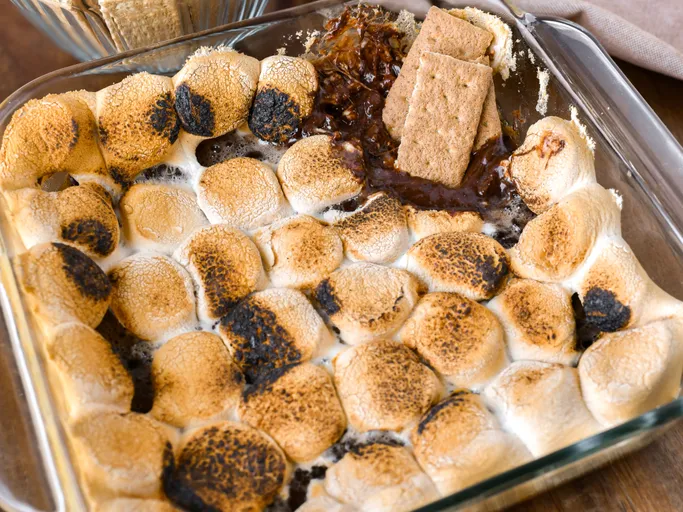

Gooey S'mores Dip

This warm s'mores dip is easy to make with chocolate chips and large fluffy marshmallows, baked until gooey and delicious. Serve with graham crackers for dipping. Great for sharing!
Ingredients
- 1 (12 ounce) bag chocolate chips
- 1 (10 ounce) package large marshmallows
- 1 (14.4 ounce) package graham crackers (such as Honey Maid)
Directions
- Gather all ingredients. Preheat the oven to 350 degrees F (175 degrees C).
- Spread chocolate chips in the bottom of a glass baking dish. Arrange marshmallows on top.
- Bake in the preheated oven until chocolate softens and marshmallows are golden brown, 5 to 10 minutes. Let dip cool, about 5 minutes.
- Serve graham crackers alongside the dip.
Go Home